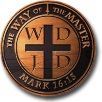
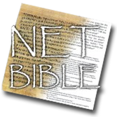

WayoftheMaster.com is an evangelism resource and training site that helps Christians "share their faith" (evangelism) effectively, biblically--the way Jesus did.
NET Bible : new Bible translation, free Bible software, Bible studies and related Bible materials
God's Bridge To Eternal LifeNot working? Click here.